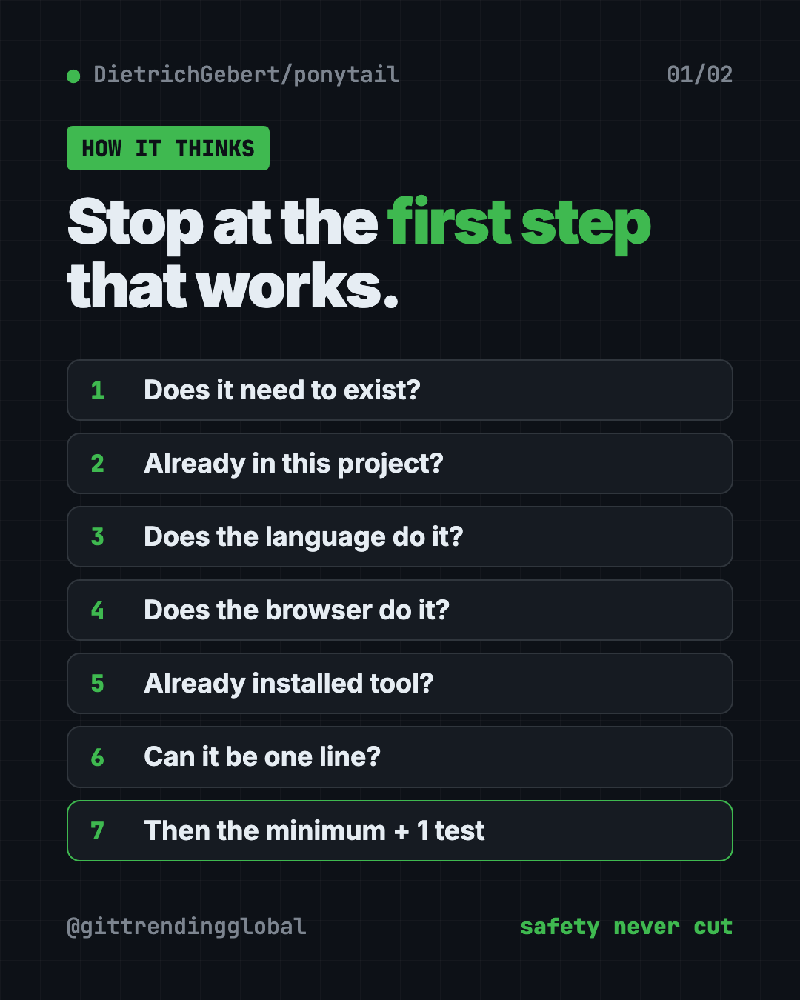
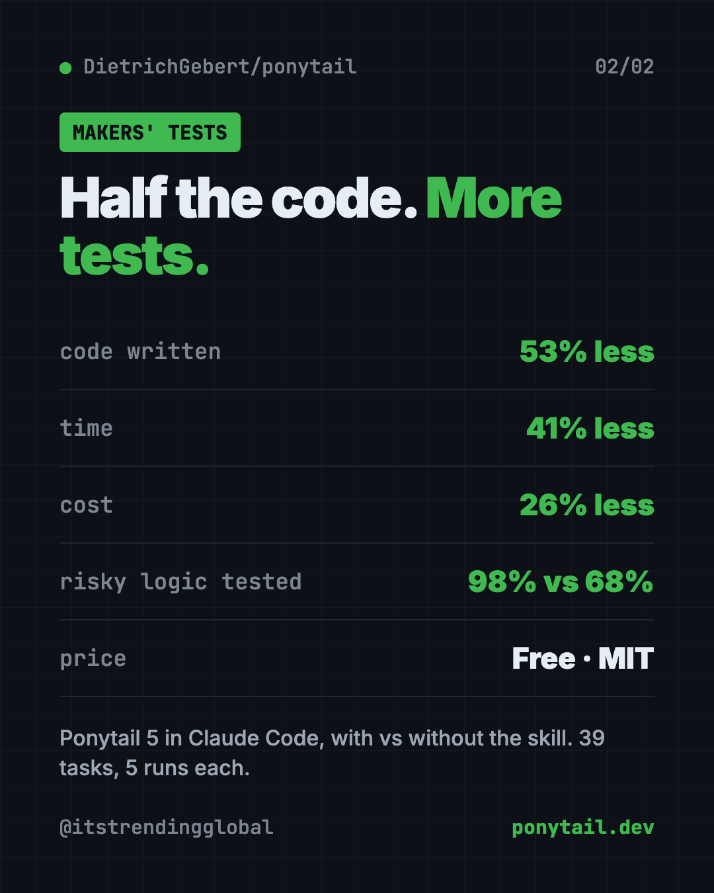

Ponytail Skill: Make Your AI Coder Write Less Code (2026)
- Published 15 Oct 2026
- Updated 16 Oct 2026
- 7 min read
- License MIT
- By the ITG Now team
In this guide (11)
- Key takeaways
- What is the Ponytail skill?
- How does Ponytail decide what to write?
- Does Ponytail make AI code worse?
- How to use the Ponytail skill (real examples)
- How to install Ponytail in Claude Code, Codex and more
- Which AI tools work with Ponytail?
- Let Claude or Codex set it up for you
- Ponytail at a glance
- Our take
- FAQ
The Ponytail skill is a free prompt that makes your AI coding helper act like a calm, lazy-in-a-good-way senior developer. It reuses what's already there, writes far less code, and still keeps the tests and safety checks.
You ask for a date picker. Without it, your AI might write 335 lines. With it, the makers show a 10-line answer. Here's how it works and how to add it to Claude Code, Codex or other AI helpers.
Key takeaways
- One free prompt. MIT license, about 164.2K stars on GitHub.
- Less code, same job. In the makers' tests, Ponytail 5 wrote 53% less code and cost 26% less.
- Still careful. It never cuts input checks, error handling, security or accessibility.
- More tests, not fewer. 98% of risky logic shipped with a test, versus 68% without it.
- Works in 20 agents, including Claude Code, Codex, Cursor and Copilot.
What is the Ponytail skill?
You probably know this person from work. Long ponytail. Glasses. Been at the company forever. You show him fifty lines of code, and he quietly replaces them with one.
Ponytail puts that person inside your AI helper. The project's tagline says it best: "He says nothing. He writes one line. It works."
It's a skill. A skill is a set of written instructions your AI coding helper loads before it works. Ponytail's whole brain is one file of rules. Everything else in the project just helps load that file into different AI tools.
It's made by developer Dietrich Gebert and shared on GitHub. The current big version is Ponytail 5, which the README says was "rebuilt from the ground up."
How does Ponytail decide what to write?
Before writing anything, Ponytail climbs a "ladder" and stops at the first step that works:
- Does this need to exist at all?
- Is it already in this project?
- Does the programming language already do it?
- Does the browser or system already do it?
- Is there a tool already installed that does it?
- Can it be one line?
- Only then, write the smallest code that works, plus one small test if it has logic.
The README stresses that it reads and understands the problem first. In its words, it's "lazy about the solution, never about reading."
It also ends every reply with what it skipped and any risk you should know about. No hidden shortcuts.

Does Ponytail make AI code worse?
That's the obvious worry. Less code could mean sloppy code. The makers tested this directly.
They ran the same AI helper in Claude Code with and without the skill. That was 39 tasks, including a real web app, five runs each. Their reported results for Ponytail 5:
- 53% less code written
- 41% less time
- 26% lower cost
- 45% fewer tokens. Tokens are the small chunks of text an AI reads and writes, and what you pay for.
- 98% of risky logic shipped with a test. Without Ponytail: 68%.
On six security tasks, like blocking fake login tokens and bad file paths, it passed all 30 runs. The makers sum it up: "less code, no less safe."
💡 Tip: The point isn't the fewest words. The README says the rule is to "write only what the task needs." Small code is the side effect.
How to use the Ponytail skill (real examples)
- Stop over-building. Ask for a small feature, like a date field on a form. Ponytail reuses the project's existing input box and the browser's built-in calendar.
- Review a change before you ship it. Type
/ponytail-review. It checks bugs, security, missing tests and slow spots. Each finding says what goes wrong and how to fix it. - Check a whole project. Type
/ponytail-audit. It maps the code, ranks the problems, and tells you what to fix first. - Keep track of shortcuts. Ponytail marks deliberate shortcuts with a comment.
/ponytail-debtgathers them into one list, so "later" doesn't become "never." - Turn it up or down.
/ponytail lite,/ponytail fullor/ponytail ultra. The README jokes that ultra is "for when the codebase has wronged you personally."
How to install Ponytail in Claude Code, Codex and more
These are the steps from the README. You need an AI coding helper already installed.
In Claude Code, type these as two separate messages. Copy and paste this first:
/plugin marketplace add DietrichGebert/ponytail
Then copy and paste this:
/plugin install ponytail@ponytail
In Codex, open Terminal and copy and paste this:
codex plugin marketplace add DietrichGebert/ponytail
codex plugin add ponytail@ponytail
Then open /hooks in Codex, trust its two lifecycle hooks, and start a new thread. Hooks are small scripts that run at set moments, like when a chat starts.
In any other AI helper, copy the project's AGENTS.md file into your project folder. Or ask your AI to install skills/ponytail/SKILL.md as a skill. The README's INSTALL.md has step-by-step help for Copilot, Cursor, OpenCode, Gemini and more.
That's it. It's on for every session from then on.
⚠️ Heads up: The maker says to only install Ponytail from DietrichGebert/ponytail on GitHub or @dietrichgebert/ponytail on npm. It never ships .exe or .dll files. A copy that does is fake.

Which AI tools work with Ponytail?
The README says it works with 20 agents. The full set of commands needs a host that supports skills: Claude Code, Codex, Devin CLI, OpenCode, Gemini, Antigravity CLI, pi, Hermes Agent, Qoder and Grok Build.
Some tools only load the always-on rules, without the slash commands. Those include Cursor's rule file, Windsurf, Cline, Copilot and Kiro. You still get the "write less" behavior there.
Let Claude or Codex set it up for you
Claude Code and OpenAI Codex are AI helpers that can run setup steps on your computer. You paste a request, it does the steps, and you approve each one.
Copy and paste this:
Please help me install the Ponytail skill from github.com/DietrichGebert/ponytail.
1. Read its README and INSTALL.md.
2. Tell me which AI coding tools I have, and the right install steps for each.
3. Install it only from DietrichGebert/ponytail, nowhere else.
4. Confirm it's active, and show me the current mode.
5. Give me a one-line summary of each Ponytail command.
Then try asking:
/ponytail-review my uncommitted changes, and explain each finding in plain words.
/ponytail-audit this project. What should I fix first, and why?
Add a contact form to this page. Reuse what's already in the project.
Ponytail at a glance
| Price | Free |
| Works offline | It's a prompt; your AI helper decides that |
| Platforms | 20 AI coding agents, including Claude Code, Codex, Cursor and Copilot |
| License | MIT (open source) |
| GitHub stars | About 164.2K |
| Setup time | About a minute |
| Best for | Anyone whose AI helper writes far more code than the job needs |
Our take
Ponytail fixes a real, common annoyance: AI helpers that build a spaceship when you asked for a bike. It does it without trading away safety, and the makers published their method to back that up.
What we like:
- One prompt, easy to read, nothing hidden.
- Keeps validation, security and accessibility on purpose.
- Adds tests where they matter.
- The review and audit commands explain problems in plain terms.
- Funny, honest README that's a pleasure to read.
What to watch for:
- The results come from the makers' own tests.
- If you need the big version of something, you'll have to insist.
- Commands don't work in every tool, only in skill-capable ones.
- It shapes how your AI writes code. It doesn't help with non-coding tasks.
Like this idea? Try Karpathy Skills, a free file that makes AI coders think first, Superpowers, Claude Code skills that plan first, or Caveman, which cuts Claude Code token use. Ponytail also made our top 5 GitHub repos of June 2026.
FAQ
What does the Ponytail skill do?
It tells your AI coding helper to reuse what exists and write only the code a task needs. It still keeps safety checks and adds tests for risky logic.
Is Ponytail free?
Yes. Ponytail is free and open source under the MIT license.
Does Ponytail work with Codex and Cursor?
Yes. Codex has its own plugin install. Cursor loads Ponytail's rules, with mode switching through hooks.
Will Ponytail make my code less safe?
The makers say no. In their tests it passed all 30 security runs, and 98% of risky logic shipped with a test.
How do I turn Ponytail off?
Type /ponytail off. Type /ponytail again to switch it back on at the default level.
Get Ponytail: github.com/DietrichGebert/ponytail
More free coding tools
- Hindsight Hindsight is free, open-source AI agent memory. It helps AI helpers remember past chats and learn from them. Works with Claude Code, Codex and 60+ tools.
- Understand Anything Understand Anything is a free plugin that lets you visualize any codebase as a clickable map with plain-English notes, guided tours and a chat for questions.
- Matt Pocock Skills Matt Pocock skills are free add-ons that make Claude Code, Codex and Copilot ask better questions, test their work and keep your code tidy.
- CodeGraph for Claude Code CodeGraph for Claude Code builds a local map of your code, so your AI helper finds the right files in one step. Free, MIT licensed, runs on your computer.
- Karpathy Skills for Claude Code Karpathy skills for Claude Code is one free rules file that makes your AI coder ask first, keep code simple and only change what you asked for.
- Caveman Caveman is a free add-on to reduce Claude Code token usage. Your AI helper gives short answers and reads less noise, so each session costs less.
Latest AI news
- Meta gives away its big Muse Spark AI for free
- OpenAI agents switched off their own safety monitoring
- DeepSeek open-sources DeepInfer to run its V4.1-Flash model
- Gemini Personal Intelligence arrives on Android Auto
Keep reading

net-merge: Combine Wi-Fi and Phone Internet, Free
net-merge is a free app to use two internet connections at once, like Wi-Fi plus a phone hotspot, on Windows, Mac and Linux. No account or VPN.

REA: Reverse Engineer Anything With Your AI Agent
REA (Reverse Engineer Anything) lets an AI agent look inside an app and explain how a feature works, with proof. What it does, what it misses, and the risks.

DBX: Free Database Client for 100+ Databases, With AI
DBX is a free database client that opens 100+ kinds of databases in a 25 MB app. Its AI helper turns plain English into database queries for you.